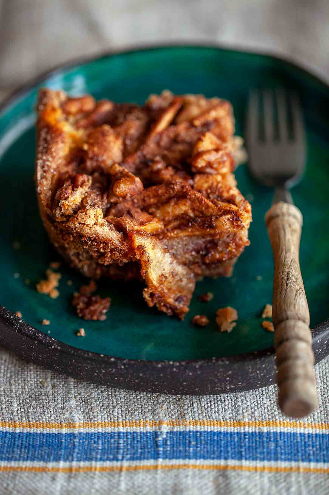

Passover Apple Cake
Passover apple cake. A classic from the astoundingly awesome cookbook author, Arthur Schwartz. Kosher for Passover yet still tastes like any traditional apple cake. Talk about a godsend.

Ingredients
For the topping
- 1/2 cup coarsely chopped walnuts or pecans
- 1/2 to 3/4 cup granulated sugar
- 1 tablespoon cinnamon
For the cake
- 3 large eggs
- 3/4 cup granulated sugar
- 1/3 cup vegetable oil or mild olive oil
- 3/4 cup matzo cake meal
- 5 cups (24 to 34 oz) apples, peeled, halved, and cut into 1/4-inch-thick (6-mm) slices, preferably Golden Delicious or Crispin (Mutzu), (3 to 5 apples)
- 1/3 cup raisins, (optional)
Directions
- Preheat the oven to 350°F (175°C). Position an oven rack in the center of the oven and lightly oil an 8-inch square glass baking dish.
- In a small bowl, mix together the walnuts, sugar, and cinnamon.
- In a large bowl with a stand mixer or handheld mixer on medium speed, beat the eggs until well combined. Beat in the sugar, about 2 tablespoons at a time, mixing until the mixture is thick and foamy. Beat in the oil, adding it in a steady stream. Scrape down the bowl with a rubber spatula. With the spatula, stir in the matzo cake meal, blending well. The mixture will be VERY thick.
- Spread half the cake mixture in the prepared baking dish. Sprinkle about half the topping mixture evenly over the batter. Arrange half the apples on the batter, making layers if you need. Sprinkle with the raisins. Scrape the remaining batter over the apples, spreading it out to cover the apples. Arrange the remaining apples on the batter and sprinkle evenly with the remaining topping mixture.
- Bake for 1 hour and 15 minutes, or until the sides of the cake pull away very slightly from the baking dish and the topping has begun to caramelize. (A cake tester is not reliable. It will not come out clean due to the moist richness of this cake.)
- Let the cake cool in the baking dish for several hours until room temperature before cutting it into serving portions. This cake is yet another Yiddish food that improves with age. Keep the cake in its dish, covered tightly with plastic, and the next day the topping will have become a moist, candy-like coating.